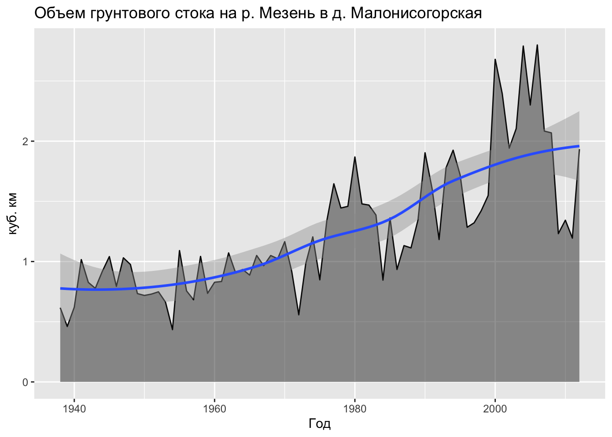

Глава 8 Статистика направлений и времени
8.1 Предварительные требования
Для работы по теме текущей лекции вам понадобятся пакеты из tidyverse. Помимо этого, необходимы методы круговой статистики из пакетов circular и NPCirc, и методы из пакета pracma.
Для работы с временными данными мы воспользуемся пакетом lubridate, который входит в tidyverse, но автоматически не подключается в сессию. Мы также воспользуемся пакетом gganimate, который позволяет анимировать графики, построенные с помощью ggplot:
8.2 Статистика направлений
8.2.1 Теория
8.2.1.1 Распределение фон Мизеса
В географии направления играют огромную роль. Ветер, морские течения, уличная сеть, перелеты птиц — все эти явления можно охарактеризовать их направленностью. Для того, чтобы эффективно анализировать такие данные, необходимо владеть специализированным математическим аппаратом.
Обработкой данных о направлениях занимается особая область математической статистики — статистика направлений, или круговая (циркулярная) статистика (Mardia, Jupp, 2000; Pewsey et al., 2013). В круговой статистике каждое направление \(\theta \in [0, 2\pi)\) представляется в виде вектора \(x = (\cos \theta, sin \theta)\). Все операции производятся над подобными векторами и их координатами. Аналогом нормального распределения для круговой случайной величины является распределение фон Мизеса (von Mises, 1918), которое задается функцией плотности вероятности: \[ f(θ)=\frac{1}{2 \pi I_0(\kappa)} e^{\kappa \cos (\theta - \mu)}, \]
где \(\kappa \geq 0\) — параметр концентрации, \(\mu\) — среднее значение (для \(\kappa > 0\)) и
\[ I_p(\kappa) = \frac{1}{2π} \int_{0}^{2\pi} \cos (p \theta) e^{\kappa \cos θ} d \theta \] есть модифицированная функция Бесселя первого рода и порядка \(p\). Из формул видно, что по своему эффекту параметр концентрации противоположен среднеквадратическому отклонению \(\sigma\), которое является параметром нормального распределения. Чем больше значение \(\kappa\), тем более сконцентрировано распределение относительно среднего значения — отсюда идет название этого параметра. Распределение фон Мизеса используется для построения ядра при аппроксимации плотности распределения направлений методом ядерной оценки (оценки по методу Парзена-Розенблатта).
В метеорологии значения \(\cos \theta\) и \(\sin \theta\) определяют соотношение зональной и меридиональной составляющей скорости [ветра] (для получения самих составляющих их надо умножить на скорость ветра).
8.2.1.2 Вычисление статистических моментов
Для вычисления статистических моментов круговой случайной величины требуется найти средний равнодействующий вектор первого порядка: \[R = (C, S),\] где
\[C = \frac{1}{n} \sum_{j=1}^{n} \cos \theta_j,\\ S = \frac{1}{n} \sum_{j=1}^{n} \sin \theta_j.\]
Данный вектор имеет направление \(\bar\theta\), которое является выборочным средним направлением исследуемой величины.
Выборочная средняя равнодействующая длина \(\bar R = \sqrt{C^2 + S^2}\) принимает значения в диапазоне \([0, 1]\) и показывает меру концентрации направлений относительно \(\theta\). \(\bar R = 1\) означает, что все исходные направления совпадают, \(\bar R = 0\) — что данные равномерно распределены по кругу, либо распределение имеет несколько мод, которые уравновешивают друг друга.
Величина \(\bar R\) дает важную информацию для предварительной диагностики картины направлений. Если значение \(\bar R\) близко к единице, это означает, что распределение является унимодальным и в качестве основного направления можно принять значение \(\bar θ\) (Mardia and Jupp 2000).
Стандартное отклонение направлений \(v\) в радианах может быть найдено как \(v=\sqrt{-2 \ln \bar R}\) .
В ряде случаев противоположные направления считаются эквивалентными. Например, нельзя сказать, идет ли улица с юга на север или с севера на юг. Такие данные в теории круговой статистики называются аксиальными (Mardia, Jupp, 2000). Для аксиальных данных возможный диапазон значений лежит в интервале \([0, \pi)\). Поскольку методы круговой статистики рассчитаны на круговое замыкание данных, стандартный подход к обработке аксиальных данных предполагает переход от направлений к их удвоенным значениям \(\theta' = 2\theta\), обработку полученных значений стандартными методами и отображение полученных значение обратно на интервал \([0, \pi)\). Для среднего, медианы и моды распределения это означает простое деление полученного значения пополам (Pewsey, Neuhäuser, and Ruxton 2013).
8.2.1.3 Определение модальных направлений
Модальные направления могут быть определены как по гистограмме распределения, так и методом ядерной оценки. Основной вопрос поиска эффективного ядра заключается в параметризации функции \(K\). Для распределения фон Мизеса таким параметром является концентрация \(\kappa\). Чем больше этот параметр, тем более локализованной будет оценка, тем сильнее будут проявляться в ней существующие моды распределения, но также будут и выделяться новые моды, которые на самом деле не значимы. Малые значения \(\kappa\) приведут, наоборот, к «размыванию» плотности распределения в пределах полного круга. Как и в случае с количеством интервалов гистограммы, избыточно малые и большие значения κ нежелательны.
В работе (Oliveira, Crujeiras, and Rod’riguez-Casal 2012) показано, что оптимальное значение \(\kappa\) может быть подобрано также для оценки распределений, являющихся конечной суммой \(M\) распределений фон Мизеса, то есть, мультимодальных распределений, имеющих плотность : \[g(\theta)=\sum_{i=1}^{M} \alpha_i \frac{\exp\lbrace{\kappa_i \cos(\theta - \mu_i)\rbrace}}{2 \pi I_0 (\kappa_i)},\] где \(\sum_{i=1}^{M} = 1\).
Поскольку в результате подбора определяется не только параметр концентрации, но и число компонент в сумме распределений (Oliveira, Crujeiras, and Rod’riguez-Casal 2014), его можно также использовать для определения количества искомых мод, если это необходимо.
Когда подобрана функция ядра и ее параметры, оценка плотности распределения (вычисление функции \(\circ f _h (x)\)) для круговых данных делается либо для исходных направлений \(\theta_j\), либо с равным (достаточно малым) интервалом — например, через 1 градус (Pewsey, Neuhäuser, and Ruxton 2013). После того как произведена оценка, могут быть выбраны направления, в которых функция плотности распределения достигает локального максимума — первого и второго по величине. Эти направления и будут соответствовать первой и второй моде распределения направлений.
8.2.2 Практика
В практической части данного раздела мы будем работать с массивом среднемесячных значений метеопараметров в пограничном слое атмосферы по полярным аэрологическим обсерваториям России. Массив данных ежемесячно обновляется на портале Аисори-М ВНИИГМИ-МЦД.
В системе доступны данные по следующим обсерваториям:
| Индекс | Название | Широта | Долгота |
|---|---|---|---|
| 20674 | Остров Диксон | 73.50 | 80.42 |
| 21824 | Тикси | 71.35 | 128.55 |
| 22113 | Мурманск | 68.59 | 33.07 |
| 22217 | Кандалакша | 67.09 | 32.21 |
| 22271 | Шойна | 67.53 | 44.09 |
| 23078 | Норильск | 69.20 | 88.18 |
| 23205 | Нарьян-Мар | 67.39 | 53.07 |
| 23330 | Салехард | 66.32 | 66.40 |
| 24125 | Оленек | 68.31 | 112.26 |
| 24266 | Верхоянск | 67.55 | 133.38 |
| 24343 | Жиганск | 66.46 | 123.21 |
| 89512 | Новолазаревская | -70.75 | 11.83 |
| 89592 | Мирный | -66.65 | 19.71 |
Для каждой обсерватории даны следующие параметры:
| Призначная часть/ метеоэлемент/число наблюдений | Обозначение | Число цифр | Единицы измерения | Константа отсутствия |
|---|---|---|---|---|
| Индекс станции | INDEX | 5 | - | нет |
| Год | GGGG | 5 | - | нет |
| Месяц | MM | 3 | - | нет |
| Срок | HH | 3 | GMT | нет |
| Стандартное значение высоты | Z | 6 | м | нет |
| Среднемесячные значения давления | MP | 6 | 10·гПа | -9999 |
| Среднеквадратические отклонения давления | SP | 6 | 10·гПа | -9999 |
| Число наблюдений для давления | NP | 3 | - | нет |
| Среднемесячные значения температуры | MT | 6 | 10·°C | -9999 |
| Среднеквадратические отклонения температуры | ST | 6 | 10·°C | -9999 |
| Число наблюдений для температуры | NT | 3 | - | нет |
| Среднемесячные значения дефицита точки росы | MD | 6 | 10·°C | -9999 |
| Среднеквадратические отклонения дефицита точки росы | SD | 6 | 10·°C | -9999 |
| Число наблюдений для дефицита точки росы | ND | 3 | - | нет |
| Среднемесячные значения скалярной скорости ветра | MS | 6 | 10·м/с | -9999 |
| Среднеквадратические отклонения скалярной скорости ветра | SS | 6 | 10·м/с | -9999 |
| Число наблюдений для скалярной скорости ветра | NS | 3 | - | нет |
| Среднемесячные значения зональной составляющей скорости ветра | MU | 6 | 10·м/с | -9999 |
| Среднеквадратические отклонения зональной составляющей скорости ветра | SU | 6 | 10·м/с | -9999 |
| Число наблюдений для зональной составляющей скорости ветра | NU | 3 | - | нет |
| Среднемесячные значения меридиональной составляющей скорости ветра | MV | 6 | 10·м/с | -9999 |
| Среднеквадратические отклонения меридиональной составляющей скорости ветра | SV | 6 | 10·м/с | -9999 |
| Число наблюдений для меридиональной составляющей скорости ветра | NV | 3 | - | нет |
Загрузим данные по всем обсерваториям из текстовых файлов в папке bound:
files = paste('data/bound', list.files('data/bound', "*.txt"), sep = '/')
(tab = lapply(files, function(X) {
readr::read_table(X, col_names = params$Обозначение)
}) %>%
bind_rows() %>%
left_join(obs, by = c('INDEX' = 'Индекс'))) # присоединим информацию о названиях станций
## # A tibble: 77,073 x 26
## INDEX GGGG MM HH Z MP SP NP MT ST NT MD
## <dbl> <dbl> <dbl> <dbl> <dbl> <dbl> <dbl> <dbl> <dbl> <dbl> <dbl> <dbl>
## 1 20674 2007 1 0 2000 7629 78 27 -187 35 27 53
## 2 20674 2007 1 0 1900 7732 79 27 -182 36 27 52
## 3 20674 2007 1 0 1800 7836 79 27 -178 36 27 51
## 4 20674 2007 1 0 1700 7942 80 27 -173 36 27 49
## 5 20674 2007 1 0 1600 8048 81 27 -168 36 27 48
## 6 20674 2007 1 0 1500 8157 81 27 -164 38 27 47
## 7 20674 2007 1 0 1400 8266 82 27 -160 39 27 45
## 8 20674 2007 1 0 1300 8376 82 27 -156 39 27 43
## 9 20674 2007 1 0 1200 8488 83 27 -152 40 27 40
## 10 20674 2007 1 0 1100 8601 83 27 -148 41 27 37
## # … with 77,063 more rows, and 14 more variables: SD <dbl>, ND <dbl>,
## # MS <dbl>, SS <dbl>, NS <dbl>, MU <dbl>, SU <dbl>, NU <dbl>, MV <dbl>,
## # SV <dbl>, NV <dbl>, Название <chr>, Широта <dbl>, Долгота <dbl>Создадим объект типа circular (из пакета circular) с направлениями ветра для анализа, и запишем его в новую переменую таблицы. Предварительно определим вспомогательную функцию, вычисляющую географический азимут на основе компонент скорости:
geo_azimuth = function(dx, dy) {
a = atan2(dx, dy)
ifelse(a <= pi/2, pi/2 - a, 5*pi/2 - a)
}
(winds = tab %>%
mutate(wind = circular(geo_azimuth(MV, MU), template = 'geographics')) %>%
select(INDEX, name = Название, GGGG, MM, HH, Z, MU, MV, SS, wind))
## # A tibble: 77,073 x 10
## INDEX name GGGG MM HH Z MU MV SS wind
## <dbl> <chr> <dbl> <dbl> <dbl> <dbl> <dbl> <dbl> <dbl> <circular>
## 1 20674 Остров Диксон 2007 1 0 2000 33 31 45 0.8166380
## 2 20674 Остров Диксон 2007 1 0 1900 32 32 45 0.7853982
## 3 20674 Остров Диксон 2007 1 0 1800 30 33 46 0.7378151
## 4 20674 Остров Диксон 2007 1 0 1700 29 35 47 0.6919214
## 5 20674 Остров Диксон 2007 1 0 1600 28 38 49 0.6350267
## 6 20674 Остров Диксон 2007 1 0 1500 26 40 50 0.5763752
## 7 20674 Остров Диксон 2007 1 0 1400 25 41 51 0.5475622
## 8 20674 Остров Диксон 2007 1 0 1300 25 42 54 0.5369107
## 9 20674 Остров Диксон 2007 1 0 1200 24 45 56 0.4899573
## 10 20674 Остров Диксон 2007 1 0 1100 24 49 58 0.4554511
## # … with 77,063 more rowsВыберем данные по высоте 0 метров за 12 часов дня для поселка Тикси, сохранив только составляющие скорости и ее скалярную величину:
(tiksi_wind = winds %>% filter(name == 'Тикси', HH == 12, Z == 0))
## # A tibble: 136 x 10
## INDEX name GGGG MM HH Z MU MV SS wind
## <dbl> <chr> <dbl> <dbl> <dbl> <dbl> <dbl> <dbl> <dbl> <circular>
## 1 21824 Тикси 2007 1 12 0 36 35 48 0.7994817
## 2 21824 Тикси 2007 2 12 0 16 11 27 0.9685090
## 3 21824 Тикси 2007 3 12 0 23 22 34 0.8076167
## 4 21824 Тикси 2007 4 12 0 17 9 30 1.0838971
## 5 21824 Тикси 2007 5 12 0 -17 -3 34 4.5377168
## 6 21824 Тикси 2007 6 12 0 -23 -25 27 3.8853482
## 7 21824 Тикси 2007 7 12 0 -5 -11 27 3.5682201
## 8 21824 Тикси 2007 8 12 0 4 5 25 0.6747409
## 9 21824 Тикси 2007 9 12 0 24 14 34 1.0427219
## 10 21824 Тикси 2007 10 12 0 41 47 40 0.7173217
## # … with 126 more rowsОтобразим распределение направлений, розу-диаграмму и плотность распределения. Для построени графиков используем функции plot.circular() и rose.diag из пакета circular. Для аппроксимации плотности распределения направлений воспользуемся функцией kern.den.circ() из пакета NPCirc. Эта функция использует функцию плотности распределения фон Мизеса в качестве ядра и по умолчанию разбивает круг на 250 направлений, по которым производится оценка плотности (при необходимости это значение можно изменить в параметре len):
plot.circular(tiksi_wind$wind,
cex = 0.5,
stack = TRUE,
sep = 0.035,
axes = FALSE,
main = 'Среднемноголетняя роза ветров в Тикси',
sub = 'Измерения за период с 2007 по 2018 г, высота 0 м')
rose.diag(tiksi_wind$wind,
bins = 8,
col = 'gray70',
border = 'gray30',
prop = 1,
add = TRUE,
tick = FALSE,
lwd = 0.5)
kden = kern.den.circ(tiksi_wind$wind)
lines(kden, shrink = 3, # параметр shrink отвечает за масштаб радиус-вектора
join = F,
col = 'steelblue')
Параметр
shrinkотвечает за масштаб радиус-вектора на графиках из пакета circular. Чем больше его величина, тем сильнее будет сжат график относительно центра круга.
Так же как и в случае с обычными данными, плотность распределения удобно использовать для определения модальных направлений, то есть наиболее часто встречающихся. Для этого воспользуемся функцией findpeaks() из пакета pracma:
peak = findpeaks(kden$y, sortstr = T)[1,2] # находим индекс самого высокого пика плотности распределения
(modal = kden$x[peak]) # извлекаем сам угол
## Circular Data:
## Type = angles
## Units = radians
## Template = geographics
## Modulo = asis
## Zero = 1.570796
## Rotation = clock
## [1] 0.813786
# раскладываем на составляющие для отрисовки линии
xp = sin(modal)
yp = cos(modal)
plot.circular(tiksi_wind$wind,
cex = 0.5,
stack = TRUE,
sep = 0.035,
axes = FALSE,
main = 'Среднемноголетняя роза ветров в Тикси',
sub = 'Измерения за период с 2007 по 2018 г, высота 0 м')
rose.diag(tiksi_wind$wind,
bins = 8,
col = 'gray70',
border = 'gray30',
prop = 1,
add = TRUE,
tick = FALSE,
lwd = 0.5)
lines(kden, shrink = 3,
join = F, col = 'steelblue')
lines(c(0, xp), c(0, yp),
lwd = 2, col = 'orangered')
text(x = 1.4 * xp, y = 1.4 * yp,
col = 'orangered',
labels = paste0(round(180 * modal / pi, 0), '°')) # приводим к целым градусам
Проведем анализ направлений для всех станций. Для этого рассчитаем функции плотности распределения и разместим их в новом фрейме данных с лист-колонкой.
Лист-колонка (list-column) позволяет хранить в ячейках таблицы данные произвольного типа. В частности, используя лист-колонку, вы можете хранить в каждой ячейке не один объект, а множество объектов, например записать в нее вектор. Лист-колонка имеет тип
list, и каждая ячейка в этой колонке так же, соответственно, имеет типlist. Что (и в каком количестве) располагать внутри ячейки — уже ваше дело. Лист-колонки оказываются неожиданно удобны в самых разнообразных сценариях, в том числе для представления статистических моделей (соответствующих каждой строке таблицы) и для хранения пространственных данных (об этом — в следующей лекции). Вместо хранения этих данных в отдельных переменных вы можете записать их в ячейки.
В приведенном ниже коде мы группируем все измерения по имени аэрологической обсерватории, вычисляем вектор плотности распределения, записываем его в список, и этот список уже помещается функцией summarise() в единственную ячейку столбца kden, соответствующую данной аэрологической станции. Далее полученная лист-колонка используется для нахождения модальных значений (тут оказывается полезно знание функционалов семейства apply):
(dens = winds %>%
filter(HH == 12, Z == 0) %>%
group_by(name) %>%
summarise(kden = list(kern.den.circ(wind))) %>%
mutate(peak = sapply(kden, function(X) {
peak = findpeaks(X$y, sortstr = T)[1,2]
X$x[peak]
})
)
)
## # A tibble: 13 x 3
## name kden peak
## <chr> <list> <dbl>
## 1 Верхоянск <dnsty.cr> -2.97
## 2 Жиганск <dnsty.cr> -3.20
## 3 Кандалакша <dnsty.cr> -0.347
## 4 Мирный <dnsty.cr> -0.826
## 5 Мурманск <dnsty.cr> 0.814
## 6 Нарьян-Мар <dnsty.cr> 1.04
## 7 Новолазаревская <dnsty.cr> -0.902
## 8 Норильск <dnsty.cr> -0.877
## 9 Оленек <dnsty.cr> -3.48
## 10 Остров Диксон <dnsty.cr> -0.145
## 11 Салехард <dnsty.cr> -2.82
## 12 Тикси <dnsty.cr> 0.814
## 13 Шойна <dnsty.cr> 0.561После этого построим розы-диаграммы для всех станций. В данном случае оправдано использование обычного цикла, т.к. итераций немного:
# устанавливаем параметры компоновки
par(mar = c(1,1,1,1),
mfrow = c(1,2))
# строим графики в цикле
for (obs_name in dens$name) {
wind_df = winds %>% filter(name == obs_name, HH == 12, Z == 0)
dens_df = dens %>% filter(name == obs_name)
modal = dens_df$peak
xp = sin(modal)
yp = cos(modal)
plot.circular(wind_df$wind,
shrink = 1.2,
cex = 0.5,
stack = TRUE,
sep = 0.035,
axes = FALSE,
main = obs_name)
rose.diag(wind_df$wind,
bins = 8,
col = 'gray70',
border = 'gray30',
prop = 1,
add = TRUE,
tick = FALSE,
lwd = 0.5)
lines(dens_df$kden[[1]],
shrink = 3, join=F,
col = 'steelblue')
lines(c(0, xp), c(0, yp),
lwd = 2, col = 'orangered')
text(x = 1.4 * xp, y = 1.4 * yp,
col = 'orangered',
labels = paste0(round(180 * modal / pi, 0), '°')) # приводим к целым градусам
}


Таким образом, мы провели графический и статистический анализ среднемноголетних направлений ветра по данным полярных аэрологических станций России. Выявлены модальные направлений, выполнена аппроксимация функции плотности вероятности направлений ветра.
8.2.3 Статистические тесты
8.2.4 Корреляция и регрессия
Существуют методы расчета показателей связи между двумя переменными, по крайней мере одна из которых является циркулярной (или сферической, если положение задается двумя углами). Их можно поделить на три большие группы, в зависимости от того, какая из переменных отвечает за направление:
- линейная—циркулярная;
- циркулярная—циркулярная;
- сферическая—сферическая;
8.3 Статистика временных данных
8.3.1 Преобразование дат и времени
Напомним, что текущее время и дату можно получить с помощью системных функций Sys.Date() и Sys.time():
Полученные объекты имеют типы Date и POSIXct:
Несмотря на то, что время и даты печатаются на экран в виде человекочитаемых строк, их внутреннее представление выражается в количестве дней (для дат) и секунд (для времени в форммате POSIXct) начиная с некоторой точки отсчета. Такой точкой отсчета по умолчанию является начало эпохи UNIX, соответстующее \(1\) января \(1970\) года по гринвичскому (UTC) времени. Чтобы убедиться в этом, воспользуемся функцией difftime, доступной в базовом R:
as.integer(date)
## [1] 18191
difftime(date, as.Date('1970-01-01'))
## Time difference of 18191 days
as.integer(time)
## [1] 1571739430
difftime(time, as.POSIXct('1970-01-01 00:00:00', tz = 'UTC'), units = 'secs')
## Time difference of 1571739431 secsРабота с датами и временем может быть достаточно утомительной при отсутствии специализированных средств. Пакет lubridate(Spinu, Grolemund, and Wickham 2018) значительно облегчает эту работу. Основные функции lubridate включают синтаксический разбор (“парсинг”) дат в разных форматах, извлечение разных компонент даты и времени (секунд, минут, часов, суток, недель, годов), вычисление разностей и периодов, а также множество вспомогательных функций (хелперов), облегачающих преобразование временных данных.
Рассмотрим базовые возможности пакета на нескольких примерах.
Создание дат возможно на основе целочисленных и строковых значений:
Для создания отметки времени необходимо сформировать строку, которая можети быть интерпретирована должным образом. При необходимости указывается часовой пояс:
ymd_hms('2015-05-15 22:15:34') # по умолчанию Гринвичское время
## [1] "2015-05-15 22:15:34 UTC"
ymd_hms('2015-05-15 22:15:34', tz = "Europe/Moscow")
## [1] "2015-05-15 22:15:34 MSK"Извлечение компоненты даты/времени — одна из самых удобных и востребованных функций lubridate. С помощью этих функций вы можете вытащить из объекта год, месяц, неделю, день, час и секунду:
year(time)
## [1] 2019
month(time)
## [1] 10
week(time)
## [1] 43
day(time)
## [1] 22
hour(time)
## [1] 13
second(time)
## [1] 10.61006Обратите внимание на то, что недели отсчитываются от начала года, а не месяца.
Отдельно следует отметить функцию yday(), которая позволяет определить номер дня в году:
Замена компонент даты/времени осуществляется с использованием тех же функций. Например, если мы хотим то же число и время, но за другой (заранее известный) год и месяц, мы можем заменить соответствующие компоненты, используя оператор <-:
Округление дат и времени выполняется с помощью функций round_date(), floor_date() и ceiling_date() соответственно. Например, получить первый день в текущем году можно так:
Периоды (periods) — это промежутки дат, выраженные в годах, месяцах или днях. Их удобно использовать для того чтобы сместить текущую дату на заданный интервал. Например, к ранее определенной дате можно прибавить 1 год, 4 месяца, 3 недели и 2 дня:
Длительности (durations) — это промежутки времени, выраженные в секундах. Работают они в целом аналогично периодам:
dweeks(1)
## [1] "604800s (~1 weeks)"
time
## [1] "2015-01-22 13:17:10 MSK"
time + dweeks(1)
## [1] "2015-01-29 13:17:10 MSK"
time + weeks(1)
## [1] "2015-01-29 13:17:10 MSK"Интервалы — это отрезки между двумя датами. Интервал можно преобразовывать в периоды и длительности:
8.3.2 Интерполяция по времени
Одна из распространенных задач при работе с временными данными — это интерполяция по времени. Часто она возникает в ситуации, когда нерегулярно распределенные по времени данные надо интерполировать на регулярные сроки (скажем, через час), чтобы обеспечить их сравнимость с другими рядами данных. Также задача интерполяции может использоваться для заполнения пропусков в данных. И в том и в другом случае необходимо учитывать автокорреляционные свойства временного ряда и с осторожностью подходить к интерполяции на длительных промежутках времени, поскольку такая интерполяция может не иметь под собой физических оснований.
8.3.3 Статистики
Существует ряд статистик и статистических тестов, которые часто используются для временных данных. Среди них мы рассмотрим следующие:
- Тест Манна-Кендалла на значимость линейного тренда
- Тест Петтитт на точку перелома — Оценка тренда по методу Тейла-Сена
- Построение автокорреляционной функции
Рассмотрим вычисление временных статистик на примере межгодичных и суточных данных по стоку реки Мезень на посту Малонисогорская1:
library(readr)
(tab = read_csv('data/Mezen.csv'))
## # A tibble: 75 x 57
## year_number Year1 Year2 datestart datepolend Qy Qmax datemax
## <dbl> <dbl> <dbl> <date> <date> <dbl> <dbl> <date>
## 1 1 1938 1939 2000-03-23 2000-06-08 98.1 747 2000-04-03
## 2 2 1939 1940 2000-03-16 2000-07-11 66.9 487 2000-04-28
## 3 3 1940 1941 2000-03-09 2000-07-12 97.4 995 2000-04-28
## 4 4 1941 1942 2000-03-24 2000-07-21 214. 2030 2000-05-01
## 5 5 1942 1943 2000-04-02 2000-07-31 242. 2790 2000-05-08
## 6 6 1943 1944 2000-03-24 2000-06-15 71.3 451 2000-05-02
## 7 7 1944 1945 2000-02-26 2000-06-30 89.0 530 2000-04-28
## 8 8 1945 1946 2000-03-25 2000-07-13 128. 1220 2000-04-27
## 9 9 1946 1947 2000-03-15 2000-06-30 179. 2150 2000-04-28
## 10 10 1947 1948 2000-03-06 2000-07-15 153. 1720 2000-04-16
## # … with 65 more rows, and 49 more variables: Qygr <dbl>, Qmmsummer <dbl>,
## # monmmsummer <date>, Qmmwin <dbl>, nommwin <date>, Q30s <dbl>,
## # date30s1 <date>, date30s2 <date>, Q30w <dbl>, date30w1 <date>,
## # date30w2 <date>, Q10s <dbl>, date10s1 <date>, date10s2 <date>,
## # Q10w <dbl>, date10w1 <date>, date10w2 <date>, Q5s <dbl>,
## # date5s1 <date>, date5s2 <date>, Q5w <dbl>, date5w1 <date>,
## # date5w2 <date>, Wy <dbl>, Wgr <dbl>, Wpol1 <dbl>, Wpol2 <dbl>,
## # Wpol3 <dbl>, Wpavs1 <dbl>, Wpavs2 <dbl>, Wpavthaw1 <dbl>,
## # Wpavthaw2 <dbl>, WgrS <dbl>, WS <dbl>, WgrW <dbl>, WW <dbl>,
## # Qmaxpavs <dbl>, datemaxpavs <date>, Qmaxpavthaw <dbl>,
## # datemaxpavthaw <date>, SumProd <dbl>, DaysPavsSum <dbl>,
## # WinProd <dbl>, DaysThawWin <dbl>, CvWin <dbl>, CvSum <dbl>,
## # CountPavs <dbl>, CountThaws <dbl>, PolProd <dbl>Построим график межгодичной изменчивости объема грунтового стока (переменная Wgr в \(км^3\)):
ggplot(tab, mapping = aes(Year1, Wgr)) +
geom_line() +
geom_area(alpha = 0.5) +
geom_smooth() +
labs(title = 'Объем грунтового стока на р. Мезень в д. Малонисогорская',
x = 'Год',
y = 'куб. км')
Для выполнения тестов Манна-Кендалла, Петтитт и оценки тренда по методу Тейла-Сена подключим пакет trend:
library(trend)
(mk = mk.test(tab$Wgr))
##
## Mann-Kendall trend test
##
## data: tab$Wgr
## z = 7.8129, n = 75, p-value = 5.589e-15
## alternative hypothesis: true S is not equal to 0
## sample estimates:
## S varS tau
## 1.709000e+03 4.779167e+04 6.158559e-01
(pt = pettitt.test(tab$Wgr))
##
## Pettitt's test for single change-point detection
##
## data: tab$Wgr
## U* = 1324, p-value = 4.131e-11
## alternative hypothesis: two.sided
## sample estimates:
## probable change point at time K
## 38
(ts = sens.slope(tab$Wgr))
##
## Sen's slope
##
## data: tab$Wgr
## z = 7.8129, n = 75, p-value = 5.589e-15
## alternative hypothesis: true z is not equal to 0
## 95 percent confidence interval:
## 0.01378903 0.02202750
## sample estimates:
## Sen's slope
## 0.01810404Все три теста в данном случе дают высокую статистическую значимость временных изменений (p-значения), при этом тест Петтитт говорит, что точка перелома находится в 38-й позиции ряда. Если разделить исследуемый временной ряд на две выборки этой точкой, то они будут иметь статистически значимое отличие в характеристиках среднего значения показателя. Метод Тейла-Сена также говорит нам, что грунтовый сток увеличивается ежегодно примерно на \(1.8\%\) (величина тренда равна \(0.0181\)), что за период 70 лет даёт абсолютный прирост грунтового стока более чем в 2 раза.
Для наглядности нанесем линию тренда и точку перелома на график:
ggplot(tab, mapping = aes(Year1, Wgr)) +
geom_line() +
geom_area(alpha = 0.5) +
geom_smooth(method = 'lm', color = 'red') +
geom_vline(xintercept = tab$Year1[pt$estimate], color = "red", size = 0.5) +
annotate("text", label = tab$Year1[pt$estimate],
x = tab$Year1[pt$estimate] + 4, y = max(tab$Wgr),
size = 4, colour = "red") +
labs(title = 'Объем грунтового стока на р. Мезень в д. Малонисогорская',
x = 'Год',
y = 'куб. км')
8.3.4 Анимация
Анимационная графика возволяет наглядно визуализировать изменения. Наиболее часто речь идет об изменениях по времени. В этом случае время работает в роли невидимой переменной, которая влияет на положение графических примитивов на изображении. Данный подход органично вписывается в концепцию грамматики графики, на основе которой построен пакет ggplot2 (см. Главу 6). Соответствующую реализацию грамматики анимаций предоставляет пакет gganimate(Pedersen and Robinson 2019).
Возможности анимаций в gganimate реализуются посредством добавления новых грамматик к построенному графику ggplot2. К числу этих грамматик относятся:
transition_*()— распределение данных по времени;view_*()— поведение осей координат во времени;shadow_*()— отображение данных, не относящихся к текущему временному срезу;enter_*()/exit_*()— характер появления/исчезновения данных в процессе анимации;ease_aes()— порядок смягчения (интерполяции) графических переменных в моменты перехода.
В качестве первого примера используем уже знакомые нам данные реанализа NASA POWER суточного осреднения, выгрузив информацию по точкам в трех городах (Мурманск, Москва, Краснодар) за 2018 год:
library(nasapower)
library(ggplot2)
cities = list(
Мурманск = c(33, 69),
Москва = c(38, 56),
Краснодар = c(39, 45)
)
tab = purrr::imap(cities, function(coords, city){
get_power(
community = "AG",
lonlat = coords,
pars = c("RH2M", "T2M", "PRECTOT"),
dates = c("2018-01-01", "2018-12-31"),
temporal_average = "DAILY"
) %>% mutate(CITY = city,
MONTH = month(YYYYMMDD))
}) %>% bind_rows()Рассмотрим колебания температуры по 12 месяцам посредством диаграммы размаха:
ggplot(tab, aes(CITY, T2M)) +
geom_boxplot() +
labs(title = "Температура воздуха в 2018 году по данным NASA POWER",
subtitle = 'Месяц: {round(frame_time)}') +
xlab('Город') +
ylab('Т, °С') +
transition_time(MONTH)
Аналогичную анимацию можно провести и на примере функции плотности распределения:
ggplot(tab, aes(T2M, fill = CITY)) +
geom_density(alpha = 0.5) +
labs(title = "Температура воздуха в 2018 году по данным NASA POWER",
subtitle = 'Месяц: {round(frame_time)}',
fill = 'Город') +
xlab('Т, °С') +
ylab('Плотность распределения') +
transition_time(MONTH)
Загрузим ранее использованные в Главе @ref(stat_analysis) данные Gapminder по соотношению продолжительности жизни и ВВП на душу населения, но на этот раз не будем фильтровать их по времени:
library(readxl)
library(googledrive)
library(googlesheets4)
countries = read_excel('data/gapminder.xlsx', 2) %>%
select(Country = name, Region = eight_regions) %>%
mutate(Country = factor(Country, levels = Country[order(.$Region)]))
gdpdf_tidy = '1cxtzRRN6ldjSGoDzFHkB8vqPavq1iOTMElGewQnmHgg' %>% ### ВВП на душу населения
as_id() %>% # преобразуем идентификатор в класс drive_id чтобы отличать его от пути
drive_get() %>%
read_sheet() %>%
pivot_longer(cols = `1764`:`2018`, names_to = 'year', values_to = 'gdp') %>%
rename(Country = 1)
## Using an auto-discovered, cached token.
## To suppress this message, modify your code or options to clearly consent to the use of a cached token.
## See gargle's "Non-interactive auth" vignette for more details:
## https://gargle.r-lib.org/articles/non-interactive-auth.html
## The googledrive package is using a cached token for iamste@yandex.ru.
## Using an auto-discovered, cached token.
## To suppress this message, modify your code or options to clearly consent to the use of a cached token.
## See gargle's "Non-interactive auth" vignette for more details:
## https://gargle.r-lib.org/articles/non-interactive-auth.html
## The googlesheets4 package is using a cached token for iamste@yandex.ru.
popdf_tidy = '1IbDM8z5XicMIXgr93FPwjgwoTTKMuyLfzU6cQrGZzH8' %>% # численность населения
as_id() %>% # преобразуем идентификатор в класс drive_id чтобы отличать его от пути
drive_get() %>%
read_sheet() %>% # первый лист
pivot_longer(cols = `1800`:`2015`, names_to = 'year', values_to = 'pop') %>%
rename(Country = 1)
lifedf_tidy = '1H3nzTwbn8z4lJ5gJ_WfDgCeGEXK3PVGcNjQ_U5og8eo' %>% # продолжительность жизни
as_id() %>% # преобразуем идентификатор в класс drive_id чтобы отличать его от пути
drive_get() %>%
read_sheet() %>%
pivot_longer(cols = `1800`:`2016`, names_to = 'year', values_to = 'lifexp') %>%
rename(Country = 1)
tab = gdpdf_tidy %>%
inner_join(lifedf_tidy) %>%
inner_join(popdf_tidy) %>%
inner_join(countries) %>%
mutate(year = as.integer(year)) %>%
drop_na()Теперь чтобы отобразить это соотношение в виде анимации, достаточно добавить новый переход посредством функции transition_time():
options(scipen = 999) # убираем экспоненциальную форму записи числа
ggplot(tab, aes(gdp, lifexp, size = pop, color = Region)) +
geom_point(alpha = 0.5) +
scale_x_log10() +
labs(title = 'Year: {round(frame_time)}') +
theme_bw() +
transition_time(year)
8.4 Контрольные вопросы и упражнения
8.4.1 Вопросы
- В каком виде направления рассматриваются в круговой статистике?
- Какое распределение является аналогом нормального распределения для круговых данных? Что означают параметры \(\kappa\) и \(\mu\) в функции этого распределения?
- Как вычисляется равнодействующий вектор первого порядка и выборочная средняя равнодействующая длина этого вектора для направлений?
- Чем аксиальные данные отличаются от круговых данных в общем случае? Какие преобразования осуществляются над такими данными для того чтобы применять к ним стандартные методы циркулярной статистики?
- Какой класс данных (и пакет) можно использовать в R для представления направлений? Как указать, что направления отсчитываются географическим методом, то есть, по часовой стрелки от направления на север?
- Какую функцию можно использовать для для оценки плотности распределения круговых данных? В каком пакете она находится?
- Какую функцию можно использовать для выявления модальных направлений по данным функции плотности вероятности?
- Какие функции позволяют строить диаграммы и розы-диаграммы по круговым данным в среде R?
- Какой параметр управляет масштабом радиус-вектора на круговых графиках?
- Что такое лист-колонка в фрейме данных, и какого типа данные можно в ней хранить?
8.4.2 Упражнения
Загрузите файл с данными по межгодичным изменениям стока на реке Мезень. Проанализируйте величину и значимость тренда, а также наличие переломного года для характеристик
Wpol2(объем половодья без грунтовой составляющей), а такжеWy(суммарный сток). Что можно сказать об их соотношении с грунтовым стоком?Повторите эксперимент с построением анимационных графиков функции плотности распределения температуры и диаграмм размаха по данным NASA POWER (параграф @ref(circular_time_animation)), но выбрав координаты трех других географических локаций.
| Самсонов Т.Е. Визуализация и анализ географических данных на языке R. М.: Географический факультет МГУ, 2019. DOI: 10.5281/zenodo.901911 |
References
Mardia, K V, and P E Jupp. 2000. Directional Statistics. Chichester New York: Wiley.
Oliveira, Ma’ria, Rosa M. Crujeiras, and Alberto Rod’riguez-Casal. 2014. “NPCirc : An R Package for Nonparametric Circular Methods.” Journal of Statistical Software 61 (9): 1–26. https://doi.org/10.18637/jss.v061.i09.
Oliveira, M., R. M. Crujeiras, and A. Rod’riguez-Casal. 2012. “A Plug-in Rule for Bandwidth Selection in Circular Density Estimation.” Computational Statistics and Data Analysis 56 (12): 3898–3908. https://doi.org/10.1016/j.csda.2012.05.021.
Pedersen, Thomas Lin, and David Robinson. 2019. Gganimate: A Grammar of Animated Graphics. https://CRAN.R-project.org/package=gganimate.
Pewsey, Arthur, Markus Neuhäuser, and Graeme D. Ruxton. 2013. Circular Statistics in R. Oxford New York: Oxford University Press.
Spinu, Vitalie, Garrett Grolemund, and Hadley Wickham. 2018. Lubridate: Make Dealing with Dates a Little Easier. https://CRAN.R-project.org/package=lubridate.